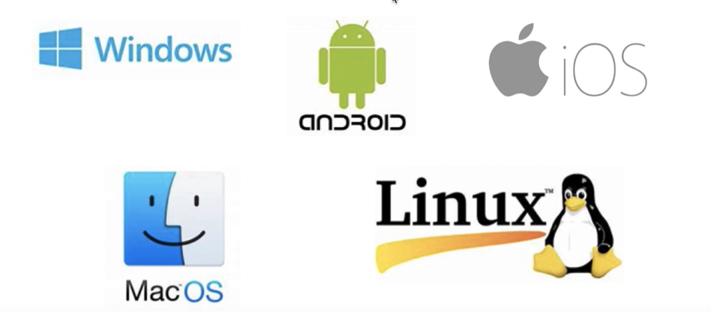
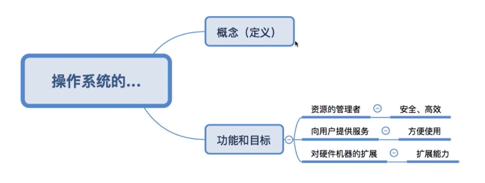
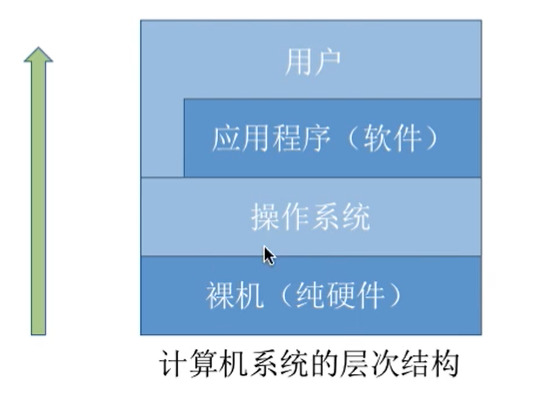
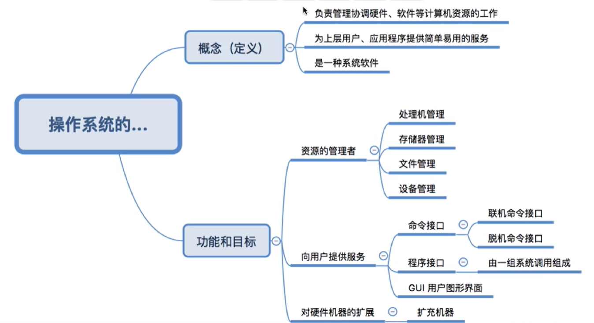

操作系统的概念（定义）目标与功能 （一）
本文最后更新于：2 个月前
大家都熟悉的操作系统
如下图，我们可以看到常用的操作系统。不管是pc端还是移动端。

知识总览

操作系统的概念和定义
一台电脑的诞生：一台裸机 ——》 安装windows操作系统 ——》安装游戏 ——》启动游戏进行游戏
硬件有我们的cpu/内存/硬盘
应用程序有我们常用的微信QQ百度云
那么操作系统的概念与定义我们可想而知。
1）负责管理协同硬件/软件等计算机资源的工作
2）为上层的应用程序，用户提高简单易用的服务
3）操作系统是系统软件，不是硬件
结合以上三条就是：
操作系统是指控制和管理整个计算机系统的硬件和软件资源，并合理组织调度计算机的工作和资源的分配，以提供给用户和其他软件方便的接口和环境，它是计算机中最基本的系统软件。

操作系统的功能和目标
作为系统资源的管理者
补充一个小知识，如果我们使用QQ与朋友进行聊天。
第一步：找到QQ文件的位置（路径） 文件管理 打开找到QQ.exe这个程序的存放位置
第二步：双击打开exe文件 存储器管理 需要把相应的程序加载到内存中
第三步：QQ程序开始运行 处理器管理 对应的进程被处理器管理
第四步：开始使用QQ聊天 设备管理 分配给QQ聊天（就比如我们使用牛客网进行面试的时候，只能一个网页开启视频）
作为用户和计算机硬件之间的接口
命令接口： 允许用户使用
程序接口： 允许用户通过程序间接调用
gui： 图像化界面
命令接口
联机命令接口：用户说一句，系统做一句。cmd
脱机命令接口：用户说一堆，系统做一堆。shell脚本
程序接口
允许用户通过程序间接调用，由一组系统调用组成（程序接口=系统调用）
程序中调用user32.dll（该调用过程为系统调用，系统调用又称为广义指令）
gui图形用户界面
不需要参数，只需要鼠标与键盘的配合即可
作为最接近硬件的层次
通常把覆盖软件的机器成为扩充机器，又称之为虚拟机。
硬件都是一些零零散散的，而操作系统就可以利用这些硬件工具做想做的事情，封装思想。
回顾

本博客所有文章除特别声明外，均采用 CC BY-SA 4.0 协议 ，转载请注明出处！